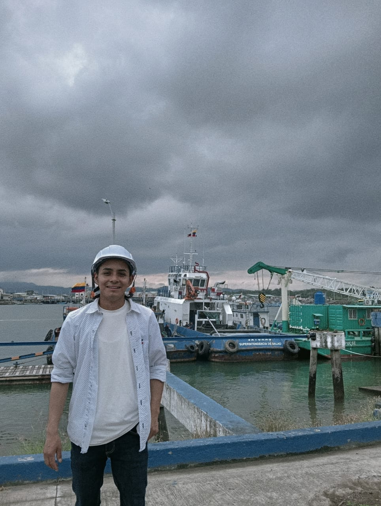

EMBAJADORA
Neys Fernanda Tacan Tenganan
Practicante – Comercio Internacional (X semestre)
Perfil Profesional
Profesional en formación con enfoque en el desarrollo territorial sostenible, articulando conocimiento técnico, investigación aplicada y saberes comunitarios. Experiencia en dinámicas productivas, economía circular y fortalecimiento organizacional en contextos interculturales.
Formación
- Universidad de Nariño Pregrado en Comercio Internacional (X semestre)
- Universidad Mariana (2025) Diplomado en Contabilidad bajo NIIF
- Cámara de Comercio de Ipiales (2025) Diplomado en Asociatividad Estratégica
- Servicio Nacional de Aprendizaje (SENA) 2019 Técnico en Contabilización de Operaciones Comerciales
Experiencia
Relatora
ACIZI, 2025
Apoyo en insumos analíticos y normativos para procesos del territorio indígena de Ipiales.
Asesora
Ventanilla de Negocios Verdes - Corponariño - Universidad de Nariño, 2025
Acompañamiento a iniciativas sostenibles, marketing y estructuración comercial.
Investigadora
Universidad de Nariño, 2022 – 2025
Semillero Sur Atenea: turismo, economía circular y caracterización agrícola.
Idiomas
- 🇪🇸 Español: Nativo
- 🇬🇧 Inglés: B2
ORCID
0009-0008-0300-3350“Conocer el mundo a través de los otros nos hace conscientes de nosotros mismos.”

EMBAJADOR
Jhon Alvaro Cuastuza Guaquez
Practicante – Comercio Internacional (X semestre)
Perfil Profesional
Profesional en formación con enfoque en transformación digital, análisis de datos y desarrollo territorial sostenible. Experiencia en proyectos I+D+i de agricultura 4.0, IoT y optimización de cadenas de suministro. Autor de publicación científica internacional.
Formación
- Universidad de Nariño Comercio Internacional (en formación)
- Servicio Nacional de Aprendizaje (SENA) 2023 Técnico en Programación de Software
- Instituto Técnico Sistematizado de Nariño (2018) Técnico en Comercio Exterior y Aduanas
- DataCamp (2025) Associate Data Scientist / Associate Data Analyst
- Escuela Superior de Administración Pública (ESAP) 2025 Diplomado en Ciencia de Datos
- Universidad de Nariño (2025) Diplomado en Métodos Estadísticos
- Universidad Tecnológica de Pereira (UTP) 2024 Bootcamp en Análisis de Datos
- Universidad Tecnológica de Bolívar (UTB) 2023 Diplomado Tecnologías 4.0
Experiencia
Investigador
SENNOVA, 2021 – actualidad
Proyectos I+D+i en agricultura 4.0, IoT y análisis de datos.
- Invernaderos inteligentes (2024)
- Sensor electroquímico (2022)
- Plataforma IoT para cadena de frío (2021)
Asesor
Ventanilla de Negocios Verdes - Corponariño -Universidad de Nariño, 2025
Identidad visual, estrategias digitales y soluciones web para iniciativas sostenibles.
Investigador
Universidad de Nariño, 2022 – 2025
Semillero Sur Atenea: economía circular, logística 4.0, inteligencia territorial.
Publicación Internacional
Portable, Energy-Autonomous Electrochemical Impedance Spectroscopy (EIS) System
5th International Electronic Conference on Applied Sciences, 2024
https://doi.org/10.3390/engproc2025087089Idiomas
- 🇪🇸 Español: Nativo
- 🇬🇧 Inglés: B1
ORCID
0009-0007-7034-5695“El principio del conocimiento es reconocer a Dios”